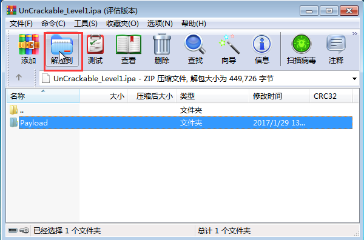
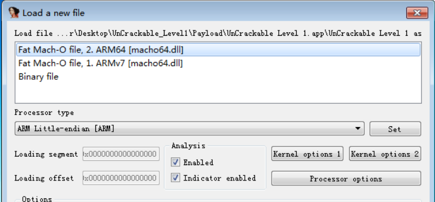
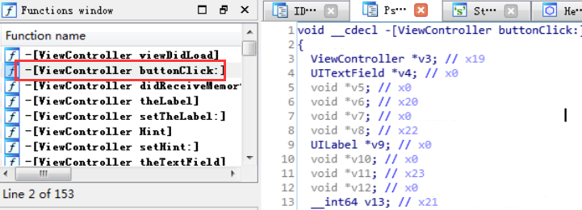
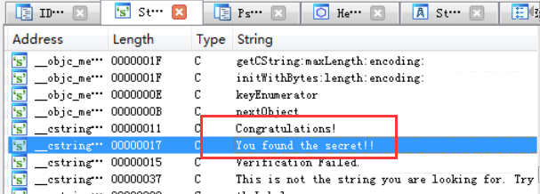
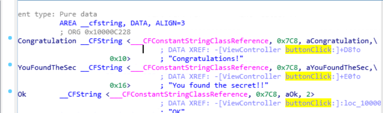
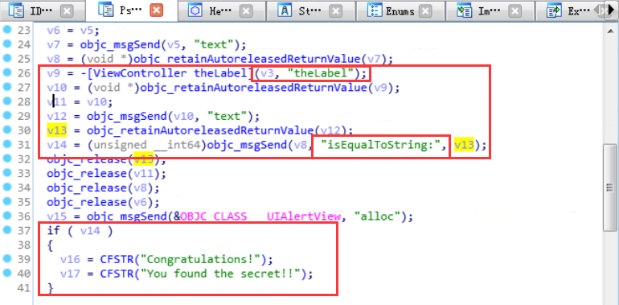
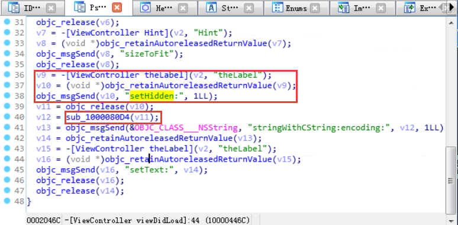
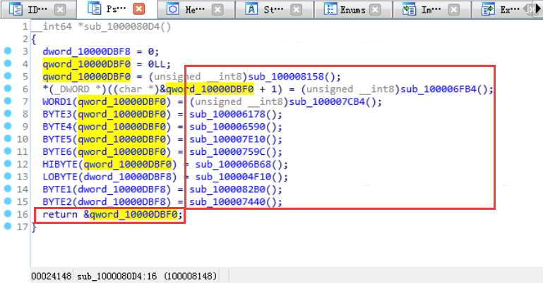
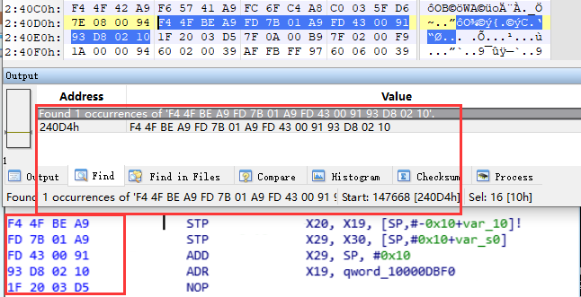
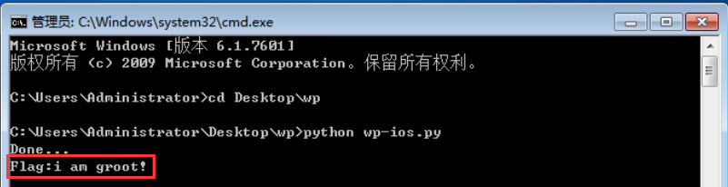

IPA是Apple程序应用文件iPhoneApplication的缩写。苹果手机上ios系统上安装开发的app，首先要将项目打包成ipa文件。利用IDA静态分析以及Unicorn的模拟执行功能，可以在没有ios调试环境的情况下对ios app开展静态分析以及模拟动态执行工作。
【步骤】
UnCrackable_Level1.ipa 为需要分析的目标程序，位置为测试虚拟机环境中的桌面文件夹，同目录下的wp文件夹中存放实验用的wp脚本。
- 首先根据ipa包的文件格式获取其主程序文件，选择使用Winrar对ipa包进行解压，将其解压到默认桌面文件夹。

- 使用桌面中的IDA程序打开“UnCrackable Level 1”，打开方式选择Math-O(arm64)方式。

根据IDA识别的按钮点击事件的处理流程，可以定位到Flag字符串的处理函数。
也可以通过字符串搜索方式定位到Flag的验证处理流程：
利用引用地址同样定位到buttonclick处理函数代码：

下面继续分析该函数的处理流程，使用F5获取伪代码显示。
分析处理流程为输入框中输入的Flag字符串与thelabel标签标识的字符串相比较，比较相等成功之后则弹出Flag验证正确的提示。
实际上程序运行后是无法看到thelabel标签标识的字符串的，需要跟进程序中视图加载时对该标签的处理过程查看到标签实际的字符串值。使用IDA查看viewDidLoad函数的代码：
可以看到thelabel标签的字符串值实际上是由sub_1000080D4函数处理后返回.同时可以看到程序中设置该标签为隐藏属性.
跟进分析sub_1000080D4函数的实现过程。
该函数功能为对字符串缓冲区逐字节进行运算赋值,最终返回运算完之后的字符串.
因为直接通过静态分析得到最终返回的字符串值较为复杂,可以考虑使用Unicorn模拟执行的方式对sub_1000080D4函数进行仿真,并获取其最终返回的字符串。
1
2
3
4
5
6
7
8
9
10
11
12
13
14
15
16
17
18
19
20
21
22
23
24
25
26
27
28
29
30
31# encoding=utf8
from unicorn import *
from unicorn.arm64_const import *
ImageBase = 0x0
ImageSize = 0x100000
StackBase = 0x200000
StackSize = 0x100000
StackTop = StackBase + StackSize - 0x10
try:
mu = Uc(UC_ARCH_ARM64,UC_MODE_ARM)
mu.mem_map(ImageBase,ImageSize)
bin = open("UnCrackable Level 1","rb").read()
mu.mem_write(ImageBase,bin)
mu.mem_map(StackBase,StackSize)
mu.reg_write(UC_ARM64_REG_SP,StackTop)
target_begin = ImageBase + 0x240D4
target_end = ImageBase + 0x24154
mu.emu_start(target_begin,target_end)
print("Done...")
x0 = mu.reg_read(UC_ARM64_REG_X0)
result = mu.mem_read(x0,16)
print('Flag:' + result.decode('utf-8'))
except UcError as e:
print("ERROR:%s" %e)该段代码的主要功能为利用Unicorn申请代码缓存及栈空间,对指定的sub_1000080D4函数代码起始位置(0x240D4)和结束位置(0x24154)进行仿真,最终取回返回值也即是寄存器X0指向的内存空间.注意因为镜像申请的空间为自定义的基地址0,代码实际所在的位置需要进行确认,

将”UnCrackable Level 1”文件拷贝到wp脚本所在目录,并执行wp脚本获取返回字符串值,即为Flag字符串.

【总结】
ios ipa逆向基础知识以及Unicorn框架的使用方法。